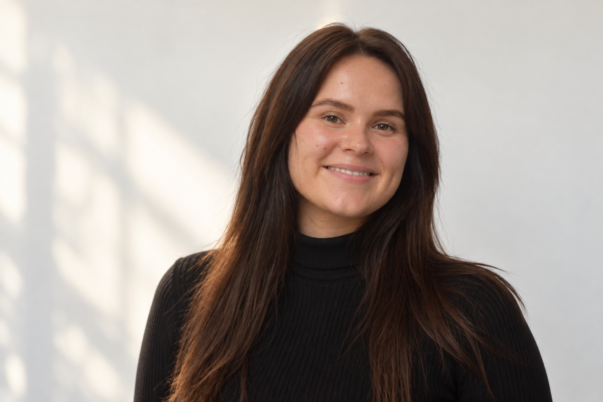

Education
& Learning

Learning opportunities, educational contexts and inequality.
→ Explore01 Interdisciplinary researcher
A skillful statistician within social and biomedical sciences, yet as a researcher highly interested in educational research, AI, and women’s health. I carry a high appreciation for elegant visuals, and my work inevitably reflects my visual style.
→ View my work
Learning opportunities, educational contexts and inequality.
→ Explore
Decisions, well-being and the social contexts around them.
→ Explore
Quantitative research, statistical modelling and data analysis.
→ Explore
Human behaviour, institutions and economic systems.
→ Explore
Project 01
A space for research on learning, educational outcomes and the factors that shape them.
→ View project
Project 02
Exploring how people make decisions within social, institutional and everyday contexts.
→ View projectI am interested in choosing methods that fit the research question, making evidence understandable, and being transparent about what the data can—and cannot—tell us.
05 About
I am an interdisciplinary researcher with a background in education and an interest in using research and quantitative methods to understand people, institutions and society. I enjoy working across disciplines and asking how evidence can contribute to fairer, healthier and more inclusive outcomes.
→ Get in touch
06 Contact